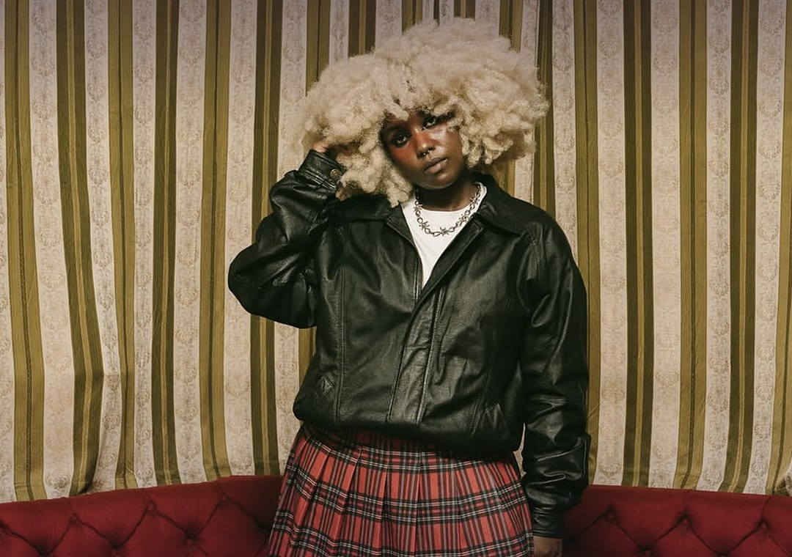
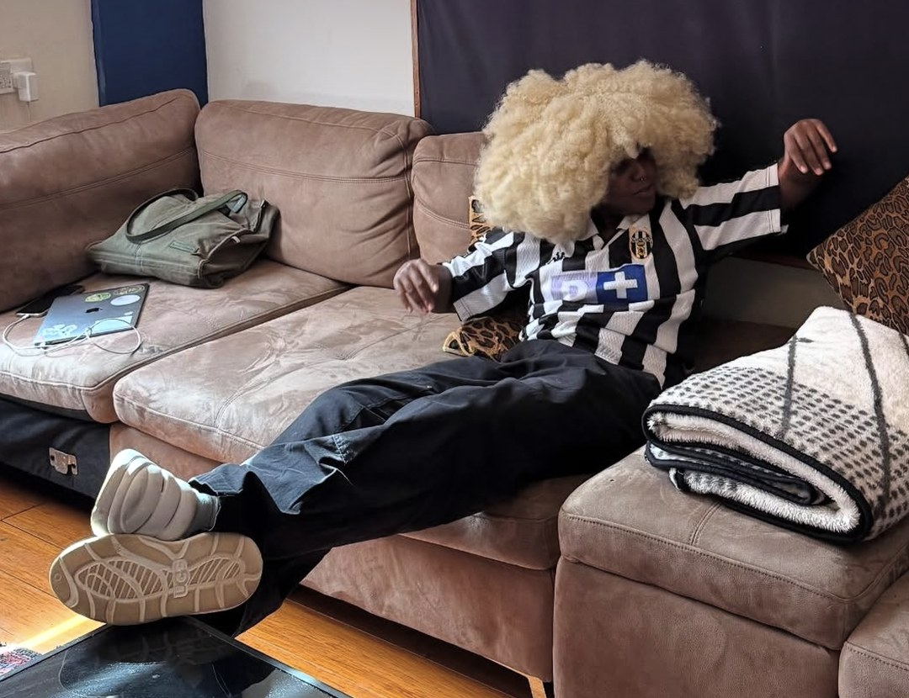
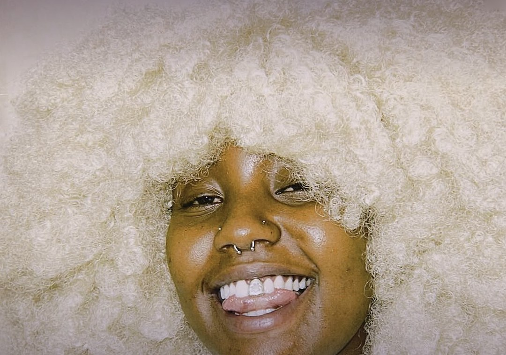

tg.blk
She taught herself to make beats on GarageBand, broke through with a song she recorded and mixed herself, and in 2026 both Apple Music and Spotify put her name in lights. Meet the Mombasa artist leading Kenya's alternative wave.

Kenyan hip-hop has a sound most people would recognise: drill, gengetone, the energy of Nairobi's streets. tg.blk makes something else entirely. Her music is slow, warm and textured, a blend of rap, R&B, soul and lo-fi production that sounds as if it was made in a bedroom, because, for most of her career, it was.
That's exactly why the industry is paying attention now.
Where it startedMade in a bedroom
tg.blk, real name Thigi, was born and raised in Mombasa. She started teaching herself to rap and make beats on GarageBand while she was still in high school, then went abroad to study in the United States, where she kept recording and producing in her dorm room and sharpened her songwriting. She has since moved back to Kenya.
Her influences are not the usual list for a rapper. She has named Zimbabwe's Oliver Mtukudzi, Kikuyu benga legend Joseph Kamaru, South Africa's Brenda Fassie and the mixtapes of Kenya's Ogopa DJs, alongside the beat-making of Timbaland and classic boom-bap.

The breakout“Love Being Used”
Her breakthrough came with “Love Being Used”, a track she recorded, mixed and mastered herself, with no label behind her. It took off in 2021 and has gone on to rack up millions of streams across the region. In 2024 she followed it with her EP IT'S NOT THAT DEEP, which included fan favourite “gin and wine”.
She built almost all of this online, finding her audience through streaming and social media rather than radio or big stages.
The year it clickedHer 2026
In January, Apple Music named her in its Africa Rising Class of 2026, a six-artist list of the acts it expects to shape African music this year. She was the only Kenyan on it, alongside names from Nigeria, Ghana and South Africa.
Then, in July, Spotify picked her as its EQUAL Africa artist of the month, a programme that spotlights women in African music. Spotify's Head of Music for Sub-Saharan Africa, Phiona Okumu, singled out her independence as a producer. tg.blk said the recognition meant a lot precisely because she had built her career online and often felt far from opportunities like it.
Now is the time for women musicians.
tg.blk, July 2026
Out nowbesides you
Her new EP, besides you, came out on 18 September. It's six tracks about the early stage of love, the giddy, obsessive part where red flags still look green, and it carries the sunshine of her home city. Singles “So Bad” and “Stop It” led the way, with “Clutch My Bag” opening the record.
It is also only the beginning. besides you is the first in a planned trilogy of EPs that will follow one relationship all the way through, from the rush at the start to wherever it ends up.

Start hereYour tg.blk starter pack
Play “Love Being Used” first. Then “gin and wine” from IT'S NOT THAT DEEP, and finish with besides you from top to bottom. If the trilogy goes the way she's planned it, you'll want to have been here from part one.
Sources
- Citizen Digital: tg.blk named Spotify EQUAL Africa artist (Jul 2026)
- HYPE Magazine: tg.blk is Spotify's EQUAL Africa artist (Jul 2026)
- Bizcommunity: Apple Music Africa Rising Class of 2026 (Jan 2026)
- Music In Africa: tg.blk profile
- Ones To Watch: Who is tg.blk?
- Ones To Watch: Love Being Used (Apr 2021)
- OkayAfrica: tg.blk is pioneering the next wave of hip-hop from Kenya
- The Culture Crypt: tg.blk on besides you (interview)
- Okayplayer: First Look Friday, tg.blk
- Clash: tg.blk releases besides you (Sep 2026)
- The Line of Best Fit: tg.blk reveals besides you (Jun 2026)